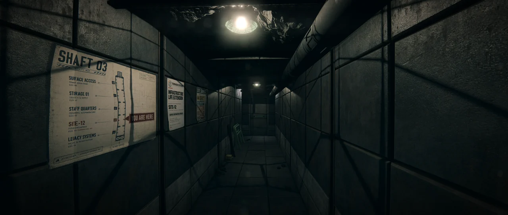
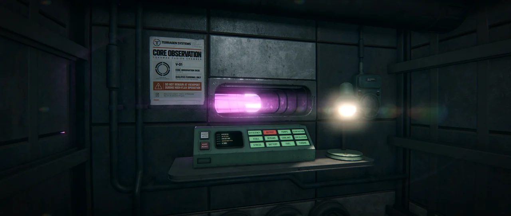

A browser game about operating a facility
that should have been retired years ago.
Runs directly in your browser. No download required.
Desktop · Keyboard + Mouse · In development · Designed for a wide range of hardware

1 / 9Shaft 03 — Site-12
WHAT IS BASELOAD?
Baseload is a first-person industrial operations game set inside an aging fusion facility.
You are the operator of Site-12. An ordinary workplace, somewhere underground. Old instruments, concrete corridors, a reactor that still needs to run.
The facility has been expanded, repaired and partially modernized. Somehow, it is still here. Now it is your place of work.

ROAD MAP
NOW — Browser Prototype
Playable shifts, reactor operation, system failures, and explorable Site-12 areas.
NEXT — Facility Expansion
More maintenance systems, additional rooms, new shift scenarios, and environmental events.
THEN — Browser Version Completion
Finalized story and lore, complete shift progression, game ending, and roughly 1.5 hours of story-focused playtime.
LATER — Full Game
A larger Unreal Engine version with a deeper story, expanded facility, stronger atmosphere, and a potential Steam release — if the project grows beyond the browser version.
GAME LOOK
Actual screenshots from the current browser build.
ABOUT SITE-12 / LORE
TGlobal built much of its industrial network during the late 20th century. Terragen Systems was created to operate part of its power infrastructure.
By the 2030s, TGlobal had effectively ceased normal operations. Most of its subsidiaries disappeared. Terragen survived partially.
Site-12 is outdated, understaffed and long overdue for modernization, but its generation quota remains in effect.
You were hired as one of the few operators still assigned to keep it running.
The grid still expects its power.
IN DEVELOPMENT
Baseload is a small solo-developed game, currently playable directly in the browser.
More systems, areas and shifts are in development.
English and Russian supported. Keyboard and mouse required.
PLAY BASELOADQUESTIONS & ANSWERS
IS THIS THE FULL GAME?
No. Baseload is in development. The browser build is the current playable version of the project.
DO I NEED TO DOWNLOAD ANYTHING?
No. Press Play in Browser to open the game. No installation required.
CAN I PLAY ON MY PHONE?
The current build is designed for a desktop browser with a keyboard and mouse.
WHY A BROWSER GAME?
It started as a small browser test and somehow kept growing. At some point, keeping it there became part of the challenge: how far can a 3D game like this be pushed while still running from a link?
So, for now, Baseload stays in the browser.